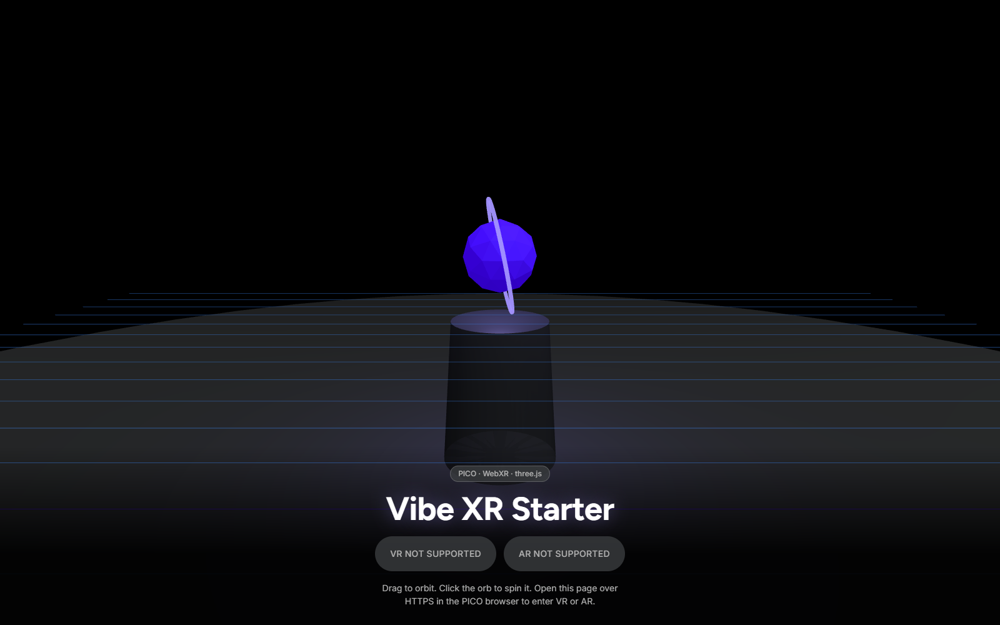
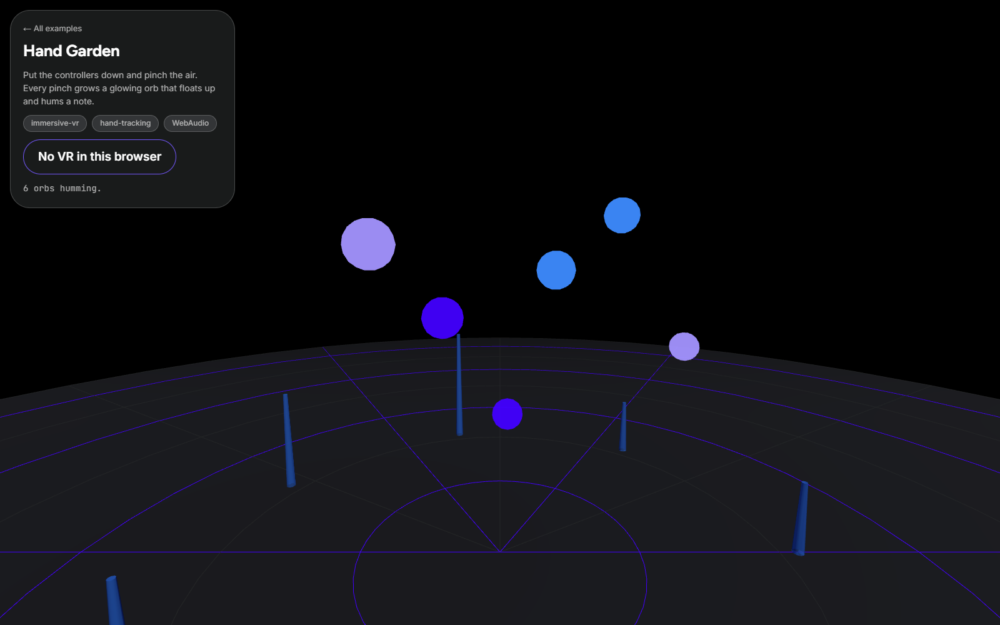
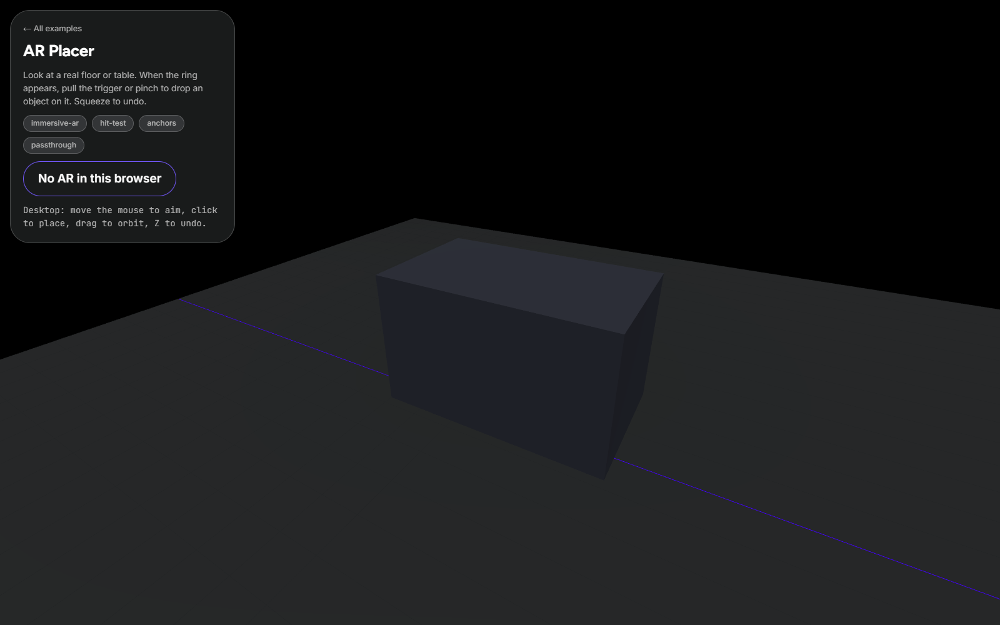
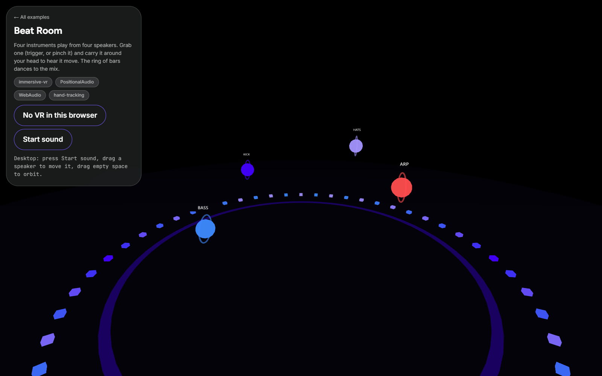
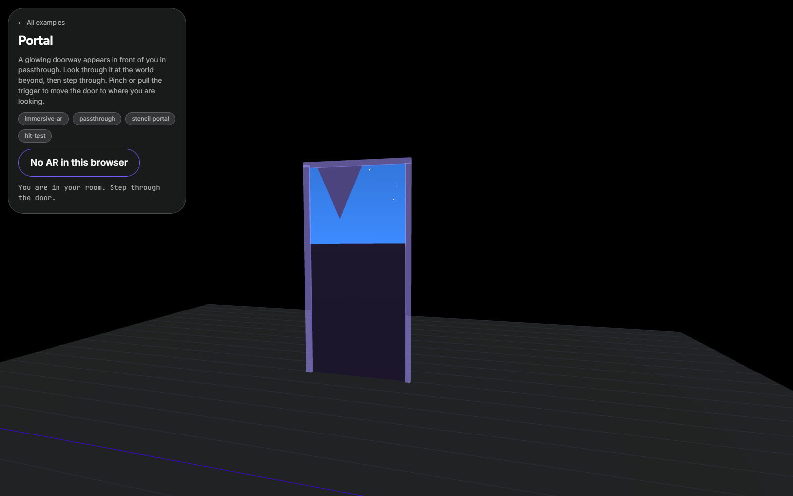
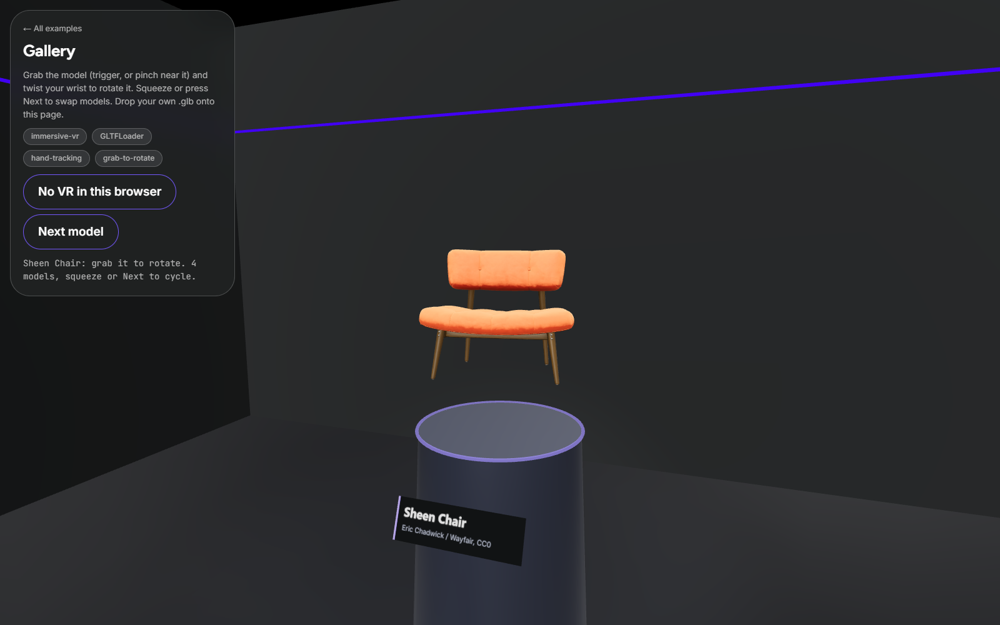

00 Claude for Spatial Computing · Homebrew Club SF
Vibe XR
with PICO CLI
vibe-xr/ foldergit clone https://github.com/RayyanZahid/pico-workshops.git cd pico-workshops/vibe-xr
01 What vibe XR is
- You describe a 3D scene in plain English.
- Claude Code writes it: one HTML page, three.js, no build step.
- You walk into it in the PICO browser, then ask for the next change.
This is WebXR: a website you step into. It runs in the PICO browser on the headsets on our table. It is not a native PICO app.
02 Setup checklist · 5 minutes
Before you type a prompt
claude --version
node -v
git --version
Free account, app on your laptop. Gives you an HTTPS URL a headset can open. tailscale.com/download
Android platform tools, for the USB path and PICO CLI.
adb version
The package is scoped. Plain
pico-clion npm is someone else’s tool.npm i -g @picoxr/pico-cli
No headset of your own? You do not need one. Build on your laptop, then borrow one of ours at the table (section 09).
03 The loop
Prompt, look, repeat
- 1PromptSay what you want in the scene.
claude - 2Claude editsThe whole scene lives in one file.
src/main.js - 3Desktop previewRefresh the tab. Drag to look around.
localhost:5173 - 4Serve over HTTPSThe headset needs a secure URL.
npm run serve - 5Open on headsetThe PICO browser loads your URL.
node scripts/open-on-headset.mjs <url> - 6SnapScreenshot what the wearer sees.
node scripts/snap.mjs
Steps 5 and 6 use PICO CLI over USB. Without a cable, type the URL into the PICO browser and ask the wearer what they see.
04 Your first 3 prompts
Paste these into Claude Code

1 · Make it yours
Replace the faceted orb on the plinth with a slowly spinning torus knot, and surround the whole scene with a soft starfield. Keep the Enter VR and Enter AR buttons working.
2 · Use your hands
When I pinch with either hand or pull a controller trigger, spawn a glowing sphere at that hand that drops to the floor and bounces to a stop. Cap it at 50 spheres, removing the oldest first.
3 · Set the mood
Give the scene a dusk sky gradient and light fog, and make every sphere slowly cycle through colors. Then check the browser console and fix anything that errors.
After each prompt: refresh the desktop tab first. Put it in a headset once it looks right on the laptop.
05 Getting it into the headset
Three ways in
WebXR only starts on https:// or localhost. On a plain http://192.168… address the page loads but the Enter VR button never appears.
A · Tailscale HTTPS
Your headset and laptop on the same tailnet. No cable. Best for your own headset.
npm run serve
It runs tailscale serve for you and prints an https://<laptop>.<tailnet>.ts.net URL, with a port such as :5443 added if 443 is taken. Open that in the PICO browser.
B · USB + adb reverse
Headset plugged into your laptop. The headset’s localhost becomes your laptop, and localhost counts as secure.
npm run usb
It runs adb reverse tcp:5173 tcp:5173. Then open http://localhost:5173 in the PICO browser.
C · A host’s headset
Our headsets cannot see your private tailnet. With npm run dev running, publish a public HTTPS link and hand it to the host at the table.
tailscale funnel --bg --https=443 5173
The link is public while it is on. Already serving something on 443? Pick another port: --https=8443 (funnel allows 443, 8443 and 10000).
Turn off only this one when you are done:
tailscale funnel --https=443 off
Not funnel reset: that wipes every serve and funnel on your laptop.
Port 5173 is the starter’s default. Desktop preview only, no headset: npm run dev and open http://localhost:5173.
06 Remix gallery
Steal a starting point
All five open on your laptop too. Screenshots are desktop previews; in the headset you get the real thing.

Hand garden
Pinch the air to plant a glowing orb that hums a note where it floats. Hands or trigger.
AR placer
Passthrough AR. Aim at a real floor or table, pinch to drop an object, and it stays anchored in the room.
Beat room
A live synthesized beat, one glowing speaker per instrument. Grab a speaker and the sound moves with it.
Portal
A doorway in your real room onto another world. Walk through it and look back at your room.
Gallery
One GLB on a plinth you grab and twist. Swap in your own model with?model=URL.
Look at examples/portal and bring its portal effect into my scene in src/main.js.
07 PICO CLI cheatsheet
The headset side, from your terminal
Over USB, with USB debugging allowed on the headset. pico-cli over Tailscale does not reach the headset.
pico-cli device list
node scripts/open-on-headset.mjs http://localhost:5173
node scripts/snap.mjs
node scripts/console.mjs
pico-cli device battery
pico-cli doctor
It always lists Spatial SDK “blocking issues”. Those are for OS 6 apps and do not affect WebXR.
The scripts/ wrap PICO CLI and adb for you. Snaps land in captures/ as both eyes side by side. Full reference: docs/PICO-CLI.md
08 What the headset can and can’t do
Measured on our units
| Feature in the PICO browser | Status | Notes |
|---|---|---|
| Immersive VR and passthrough AR | WORKS | Both immersive-vr and immersive-ar |
| Hand tracking, controllers | WORKS | Pinch fires the same select event as a trigger |
| Hit test, plane detection, anchors | WORKS | Anchors persist across sessions |
| Layers | WORKS | For crisp text panels |
| Camera access, depth, room mesh, light estimation | REFUSED | The browser blocks them. No “point a model at the room” |
| DOM overlay | REFUSED | Build UI in 3D instead |
| Eye and face tracking | ABSENT | Not on any unit we have |
| Native PICO Spatial SDK apps | NOT TONIGHT | Needs PICO OS 6. Our headsets run an earlier OS |
pico-cli web launch | NOT FOR US | Targets OS 6 / the emulator, and installs a 336 MB browser APK on the headset first; not for our headsets |
09 Headset etiquette
Eight headsets, fifty builders
Check out at the table
Name, unit number, waiver. Bring it back to the same table and check in.
5 to 8 minutes
Then hand it on. The next person watches your laptop mirror while they wait.
Have your URL ready
Test on your laptop first. Headset time is for looking, not debugging.
Clear space, wipe the pad
Set the boundary, keep a spotter nearby, wipe the face pad before you hand it back.
10 Next up
Put real things in your scene
Meshy → Blender MCP → your scene
Generate a model from text or an image with Meshy, clean it up in Blender with Claude driving it over MCP, export a GLB into assets/.
Higgsfield also turns an image into 3D if you have your own account.
Load assets/model.glb with GLTFLoader, scale it to about 30 cm, and place it on the floor a meter in front of me.
Physical AI Agents
Wed Sep 30 · Vizcom
Impact Lab
Sat Oct 3
Show and tell at 8:20. Two minutes each, in a headset, mirrored on this screen.